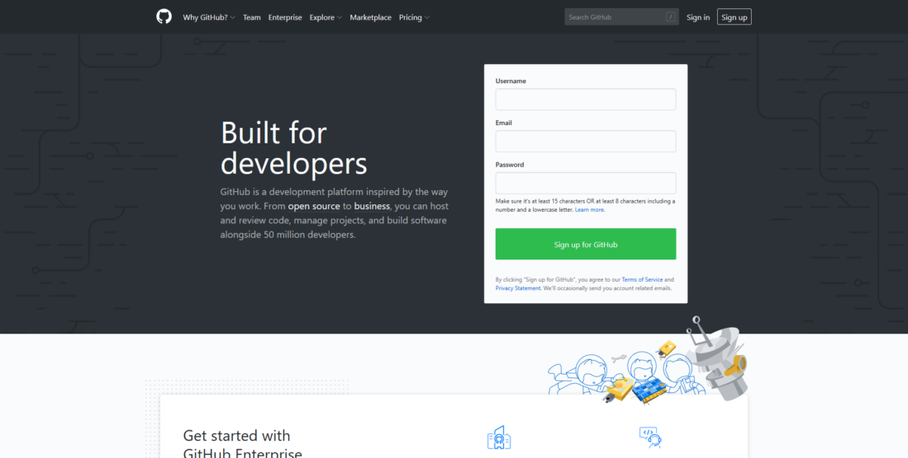
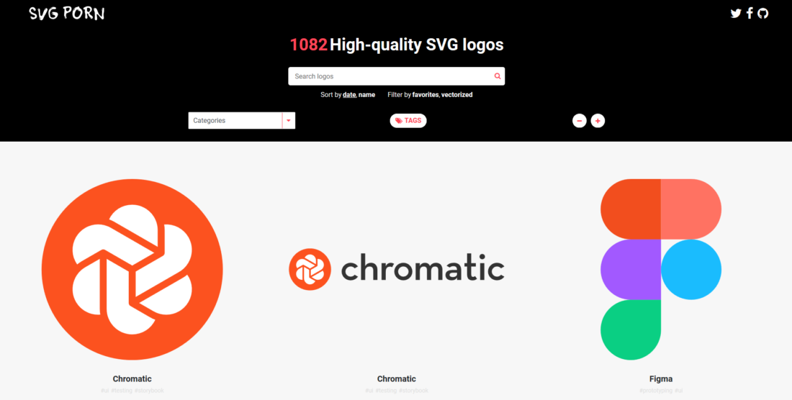
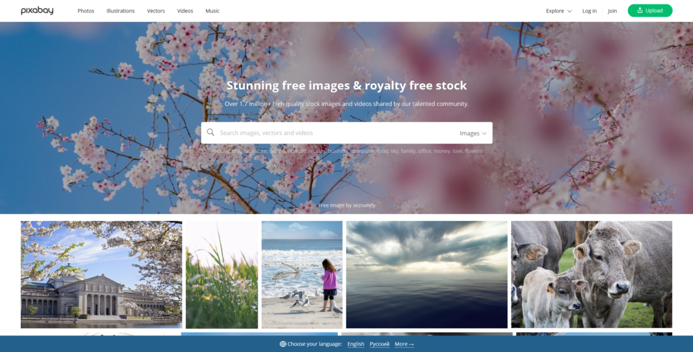
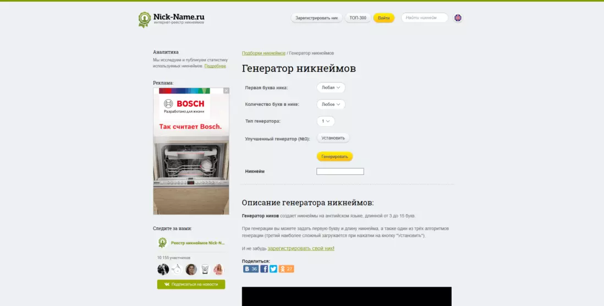
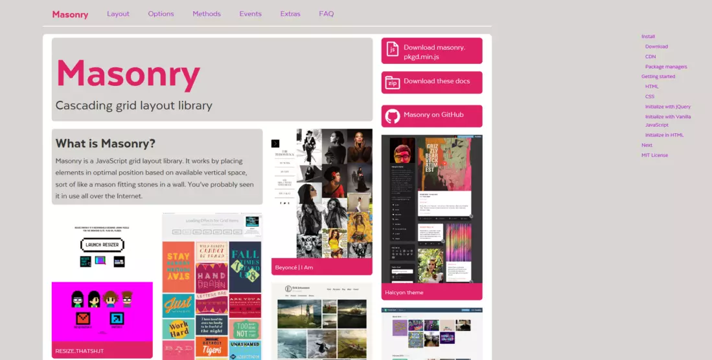
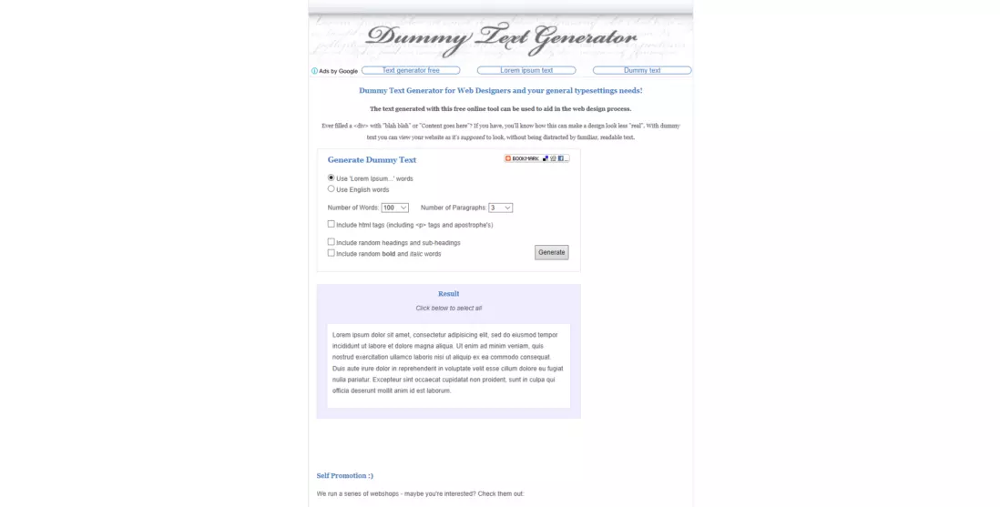
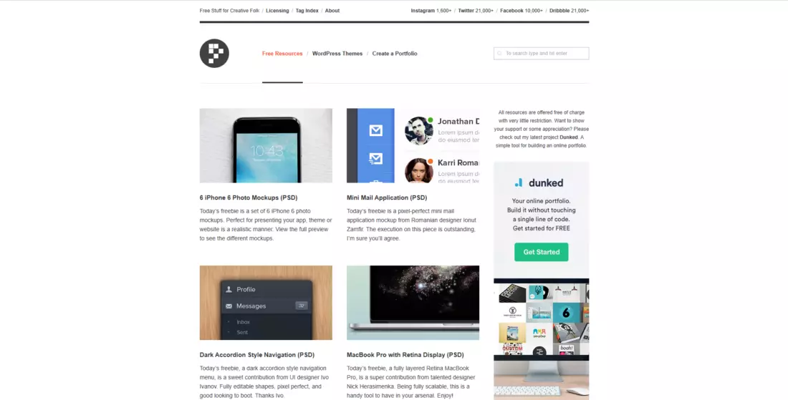
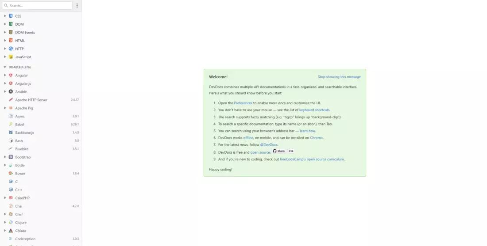
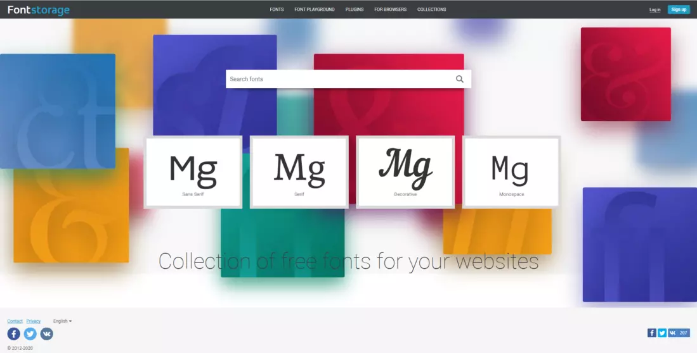
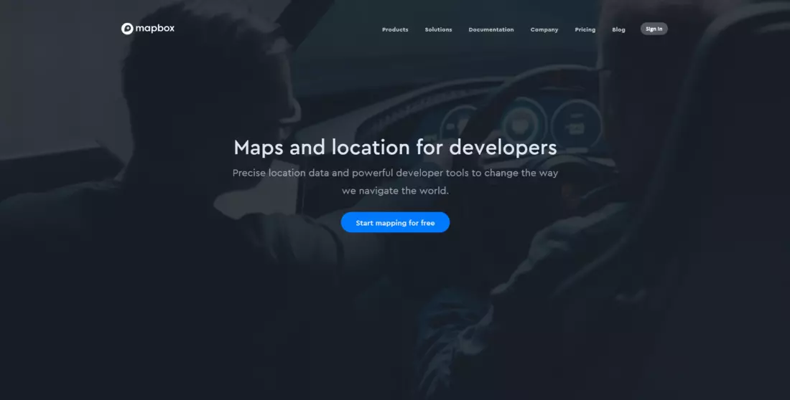

Топ-10 лучших сайтов для веб-разработчиков
У каждого веб-дизайнера, независимо от того, является ли он фрилансером или работает в офисе, имеются свои технологии, которые он применяет при создании новых проектов.
При этом есть перечень сайтов, которыми пользуются все веб-разработчики. Они помогают повысить качество продукта и привлечь как можно больше посетителей. 10 таких сайтов рассмотрены ниже.
1. Github.com

Данный ресурс является своеобразной соцсетью, но только предназначен он не для широкой аудитории, а для специалистов в области информационных технологий. Каждому веб-дизайнеру следовало бы иметь здесь аккаунт.
2. Svgporn.com
g
На этом сервисе имеется свыше 1000 логотипов, предназначенных для использования веб-разработчиками в их проектах. Все они имеют отличное качество, но при этом платить за них не придётся ни копейки.
Одна из главных положительных особенностей представленных здесь на выбор изображений заключается в том, что при приближении их качество не утрачивается. Это всё благодаря векторной технологии. Разумеется, весят эти картинки не мало, но ради столь высокого качества можно пожертвовать цифровым пространством в несколько гигабайт.
3.Pixabay.com

А это ещё один сервис, который предоставляет на выбор множество бесплатных изображений. Искать подходящее фото поможет очень удобная встроенная поисковая система. Здесь можно выбрать любую категорию, а также воспользоваться подсказками по поиску похожих картинок.
Большой радостью для русскоговорящих веб-дизайнеров станет тот факт, что PixaBay имеет интерфейс на русском языке.
4.Nick-name.ru/generate/

Этот сайт выручит, когда необходимо как можно быстрее придумать уникальный никнейм. В основу генерации ника положено три алгоритма, каждый из которых имеет свою степень сложности.
Начальную букву пользователь может задать сам. Также можно вручную выбрать любой алгоритм.
Созданный никнейм может быть зарегистрирован на этом сайте, и тогда для других пользователей это сочетание символов будет уже недоступным.
5.Masonry.desandro.com

А этот ресурс придёт на помощь тем, кто не желает думать над созданием сеток страниц. Здесь можно выбрать любую сетку, и блоки автоматически будут подстроены под нужные размеры.
6.Dummytextgenerator.com

Этот генератор текста примечателен тем, что он способен создавать до 2,5 тыс. слов. При этом можно заранее указать, сколько в тексте будет абзацев. Их максимально возможное количество – 100.
Можно также включить html-теги и жирный текст. Кроме того, генератор способен создавать рандомные заголовки.
7. Premiumpixels.com

Этот ресурс поможет тем, кому требуются PSD-макеты и темы для WordPress. За скачивание материалов ничего платить не нужно.
8. Devdocs.io
Здесь можно найти документацию практически по любой технологии разработки. Это довольно удобно, поскольку не придётся тратить много времени на то, чтобы искать информацию по каждой отдельной технологии, посещая много разных сайтов.

9. Fontstorage.com

На этом сайте есть много различных шрифтов, предоставляемых пользователям абсолютно бесплатно.
Ресурсом удобно пользоваться, так как здесь сразу показано, как будет смотреться шрифт на создающемся сайте.
10. Mapbox.com

Этот ресурс придётся по нраву тому, кто хочет, чтобы раздел «Контакты» на его сайте отличался от обычных карт Google и Яндекс. Здесь из множества вариантов можно выбрать те карты, которые, по мнению веб-дизайнера, хорошо впишутся в его сайт. Например, можно оформить карты в космическом стиле или сделать так, чтобы казалось, будто они нарисованы от руки.
Стоит сказать, что данный сервис платный. Однако можно взять карты бесплатно, при условии, если они не будут применяться в коммерческих целях.